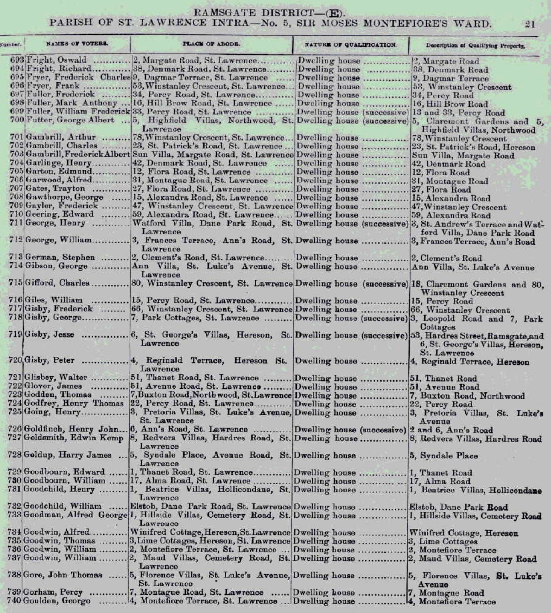

Mark Anthony Fuller 1878 - 1941
[ Home ] | [ Calendar ] | [ Surnames Index ] | [ Errors ] | [ Family History ]Mark Fuller, the husband of Jane Eliza Caroline Tutt (the first cousin twice-removed on the father's side of Nigel Horne), was born in Minster, Thanet, Kent, England on 20 Feb 18781, was baptised there at St Mary the Virgin on 3 Nov 1878 and married Jane (a general servant with whom he had 5 children: Mark Anthony, Kate Rosaline, James Richard Edmund, Charles Thomas and Elizabeth Rebecca) in St Lawrence, Thanet, Kent, England on 3 Apr 18992.
During his life, he was living at 16 Hill Brow Road, St Lawrence in Thanet in 1903; at 22 Central Road, Ramsgate, Kent on 2 Apr 19113; and at 3 Central Road, Ramsgate, Kent on 19 Jun 19214. In 1921 he was working at Repairer, miner labourer at Chislet Colliery, Sturry, Kent, England.
He died on 2 Sept 1941 in Toronto, Ontario, Canada.
Children
- Mark Anthony was born c. Jun 1899
- Kate Rosaline was born c. May 1900
- James Richard Edmund was born on 12 Sept 1902
- Charles Thomas was born on 7 Jan 1905
- Elizabeth Rebecca was born on 11 Apr 1907
Citations
- Kent, Canterbury Archdeaconry marriages 1538-1928 - Findmypast
- Kent, Canterbury Archdeaconry Marriages - Findmypast
- 1911 Census for England & Wales - Findmypast (was age 34 and the head of the household)
- 1921 Census Of England & Wales - Findmypast (was age 43 and the head of the household)
Media
Mark Fuller - 1903 Voters List

Thanet Advertiser April 8, 1899

1911 Census for England & Wales - GBC/1911/RG14/04529/0509/5
Kent, Canterbury Archdeaconry marriages 1538-1928 - GBPRS/CANT/M/97022325/1
England & Wales marriages 1837-2008 - BMD/M/1899/2/AZ/000137/065
England Marriages 1538-1973 - R_848395557
1911 Census for England & Wales - GBC/1911/RG14/04529/0509/1
England & Wales births 1837-2006 - BMD/B/1878/1/AZ/000202/011
1901 England, Wales & Scotland Census - GBC/1901/0007457503
England Births & Baptisms 1538-1975 - R_884575934
Kent Baptisms - GBPRS/CANT/B/96511791
1921 Census Of England - GBC-1921-RG15-04482-0639-01
Family Tree

Map
Generated by ged2site. Last updated on Jul 3, 2024
Known Issues
Death date (2 Sep 1941) has no citations
Baptism information not used to determine a parent
Residence record for 1903 contains no citation
Listed in the residence for 1903, but spouse Jane Tutt is not
No records of living with anyone